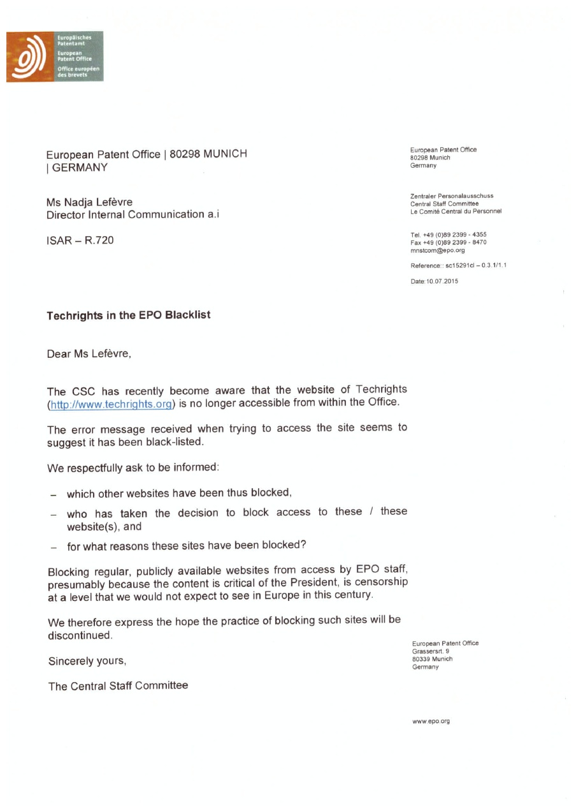
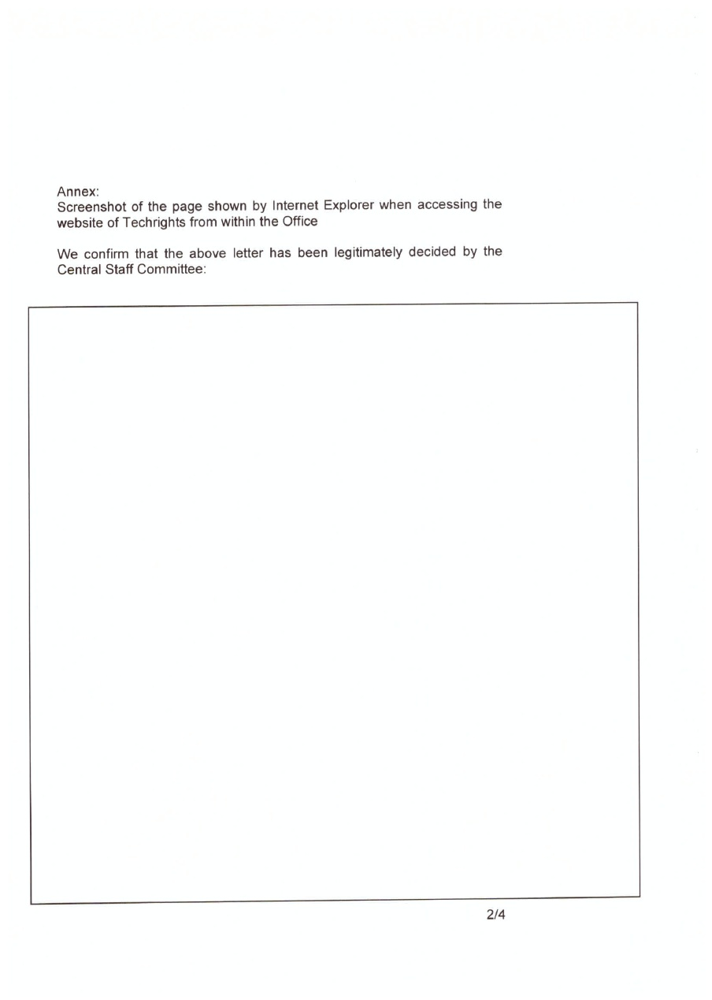
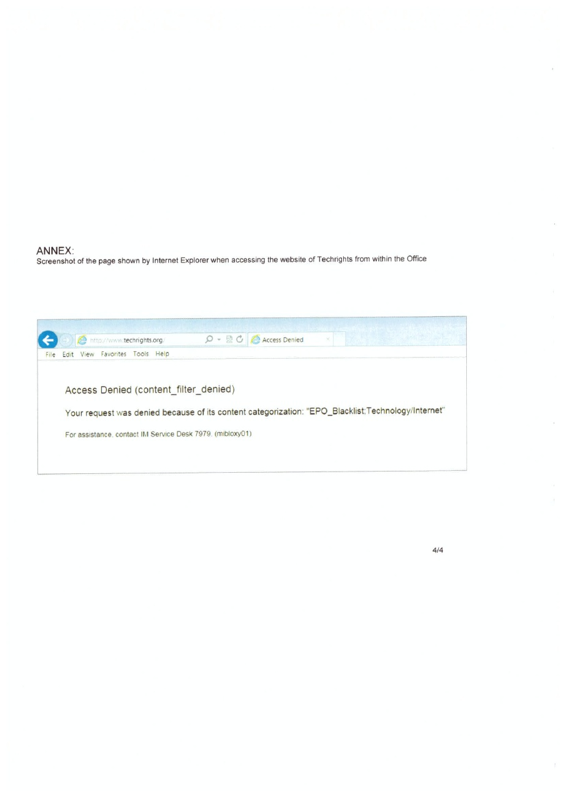
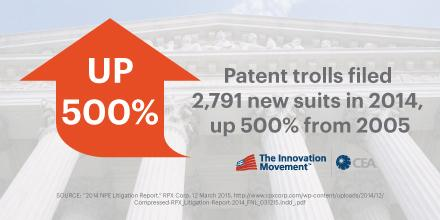

07.21.15
Posted in Europe, Patents at 4:35 pm by Dr. Roy Schestowitz
From authority need not always come justice
Summary: A roundup of the latest patent news from Europe, focusing on Italy, the UK, Germany, and Hungary
UPC and EPO
DAYS ago we recalled Italy's defeat on UPC. Italian politicians basically surrendered to patent maximalists and patent lawyers in Europe are expectedly jubilant. One wrote: “The renewal fees will be less than 5.000 EUR during the first 10 years of the patent. The cumulative total to be paid over the full 20-year term will be just over 35.555 EUR. Currently, the total amount of renewal fees for a European patent validated in 25 member states is 29.500 EUR during the first ten years and 158 621 EUR in total. In other words, the True Top 4 decision corresponds to a reduction of 78% compared to the current situation.”
It’s all about money, isn’t it? Even as the EPO continues to attack its own staff all that the management can wave as an excuse for this is money. Rather than a public service the EPO is now a greedy corporation. Who’s funding the EPO anyway? European taxpayers. It’s a form of subsidy or ‘welfare’ for a system that is headed by corrupt officials with astronomical salaries and relatives/friends/former colleagues in positions of power. We can become a laughing stock even in the eyes of Zimbabwe now.
Qualcomm’s Patent Abuse Under EU Fire
“Even as the EPO continues to attack its own staff all that the management can wave as an excuse for this is money.”In other news from Europe, Qualcomm faces new EU antitrust probes over patents [1, 2, 3]. Why did it take so long? We have written about Qualcomm’s abuses for quite a few years. As one publication put it, “European Union antitrust regulators are investigating whether one of the world’s biggest chipmakers, Qualcomm, uses illegal tactics to shut out rivals, six years after slapping a record 1 billion euro ($1.09 billion) fine on Intel for a similar offence.
“Qualcomm has been feeling the heat from regulators in Europe, the United States, China, Japan and South Korea in recent years in relation to its licensing model and the power of its patents in mobile networks and communications devices.”
Qualcomm is perhaps the only hardware giant that can rival Intel when it comes to scale of crimes (although Intel does criminal things in many more areas and aspects).
The whole Qualcomm situation ought to teach Europe — and this includes the antitrust officials — that patents maximisation is not what Europe needs.
Shaming the United Kingdom for Not Being Crazy Enough About Patents
Here in the UK we regret to see this patent propaganda titled “UK patent applications dropping as Sweden files 3.5 times more patents than the UK”. On the face of it, this sounds like exciting news, but the article is actually berating Brits for not amassing patents as though only when you acquire (buy) or get granted a patent your work becomes “innovative”. Here is the opening sentence of the article: “Bad news: the UK’s attitude to intellectual property remains dismissive, as new figures show that the number of patents filed were not just below the EU average, but actually falling.”
How is that “bad news”? That’s like saying that the UK having less nuclear weapons than Russia is “bad news”. England reportedly puts all of its nuclear arsenal (not to be confused with Trident) in Scotland and the Scots surely hate it, judging by the growing popularity of SNP. Perhaps they realise that nuclear waste and nuclear warheads on their soil not only fail to improve their security (Russia would view Scotland as a high-value target) but actually cause potential health hazards (see Japan and Ukraine). A lot of that is true for patents too, as they are basically weapons that either discourage innovation (deterrence) or assault Brits who come up with good ideas and implement them.
The article continues with this statement: “In absolute numbers, by far most patent applications come from Germany. With 22,800 filed, the country had over 40 per cent of all European applications.”
Well, the EPO is now based in Germany, too. Does it mean much? No, it doesn’t mean that Germany is most innovative, it just shows that many Germans (or German companies) like to pass money for Munich and other German cities to devour.
There is this constant obsession of patent lawyers. They want to delude technical people into believing that correlation between patents and innovation (or market leadership) is so strong that without them hiring lawyers their businesses will fail. Hiring patent lawyers is a waste of time and legal costs are often the cause for companies going bankrupt. In many cases, patent lawyers are just a burden that tries hard to market itself.
Patent Lawyers Promote Patents in Hungary
Today in the lawyers’ news/media we find “Shelston IP” trying to set the record on patents in Australia and in New Zealand, where technical people have been fighting for many years against patent lawyers and corporate lobbyists.
On the same day “Danubia Patent & Law Office LLC” tried to set the record on patents in Hungary (part of the EU), where resources for patent applications are far more limited than in Germany.
Does anyone in Europe (especially the less fortunate member states) think that this UPC hype will do them any better than German bankers did for Greece? █
Permalink
 Send this to a friend
Send this to a friend
Posted in America, Law, Patents at 3:42 pm by Dr. Roy Schestowitz
Summary: The latest instances of assault on changes to the US patent system, demonstrated through an elaborative survey of the media (two days’ worth)
THE futility of a so-called ‘reform’ in the US patent system and our dismissive attitude towards it is due to corporations-led watering down of bills. What’s typically left in bills is nothing of substance, or too little of substance, just enough for the corporate media to state that the system has been changed and is thus ‘fixed’.
“Corporations and the millionaires (or billionaires) who own them are totally dominating political platforms.”Blake A. Ilstrup, who describes himself as “general counsel and senior vice president of business development at Kineta,” does not want the current patent regime to change. “Congress must keep trolls away from medical patents,” heralds another headline from someone working in Kineta’s field (or very similar). It sure looks like there’s a battle between lawyers and everyone else. Remember that many lobbyists are themselves lawyers. AmeriKat, a strong proponent of more patents in the US (and a proud proponent of software patents, so we assume that it’s a patent lawyer from the US), happily speaks of “US patent litigation boom” (more business for lawyers), not to our surprise at all. Sen. Gerald Ortiz Y Pino’s piece about “frivolous patent suits” continues to circulate while former Rep. Ron Klink (D-Pa.) pretends that this out-of-control patent system is good for workers (he published this in a site where lobbyists are abundant). This former Representative sure seems to be fronting for corporations here, not workers. There is also a lot of pro-patents propaganda (more lawsuits wanted) from patent lawyers who celebrate this horrible patents-maximising system, hoping that it stays in tact [1, 2, 3, 4]. With an arrogant grin in the latter two examples, patent lawyers actively work to derail patent reform. They are succeeding so far because, as the first of these highlights right in the headline, “House vote on Innovation Act could be delayed until after August recess” (delay works well for them).
Where is opposition to software patents in the media? We’re massively outnumbered now by patent lawyers. The corporate media is currently reposting a biased article from Bloomberg (booster of patents and so-called ‘IP’ for a number of years), showing us all that no chance of a ‘reform’ — however small — is being tolerated by corporations. Corporations and the millionaires (or billionaires) who own them are totally dominating political platforms. █
Permalink
Send this to a friend
07.20.15
Posted in Free/Libre Software, Google, Microsoft, Oracle, Patents at 4:50 am by Dr. Roy Schestowitz
“Software patents are a huge potential threat to the ability of people to work together on open source.”
–Linus Torvalds
Summary: The real patent battle is fought not in Congress (with corporate lobbyists) but in the courtroom, with a growing number of outcomes which are favourable to Free/libre software
SOFTWARE PATENTS are severely damaged in the US, especially following the Alice case (ruled by SCOTUS one year ago). The latest cases, which we covered this month, serve to show that software patents are dropping like flies in the courtrooms, even when landing on courts that are historically very friendly towards software patents.
“District courts used Great Atlantic to invalidate patents en masse, much like is done today after Alice,” Patent Buddy wrote the other day. Nevertheless, the corporate media focuses on other matters.
“It looks as though software patents are rapidly dying.”Joe Mullin has revealed that yet more software patents have just died and not a patent troll was behind them. “Rovi,” he explains, “provides digital entertainment guides to cable companies and others and has long used its patents to enforce its dominant position in the market. That strategy has come in for criticism, with Rovi’s patents being viewed as covering the basic idea of an electronic TV Guide. That was especially true when Rovi used its patents to go after Internet companies that wanted to make their own guides and not take Rovi content, like Hulu and Amazon.”
Well, these patents are now dead and Wall Street-centric media says that the company is downgraded. “Multichannel video programming distributors may face the same struggles in court,” says the author, “but those patents are less abstract than software patents, according to analysts.”
Mullin wrote also about Newegg (yet again), showing that it won a patent case that had been brought against it by TQP. “Two weeks after online retailer Newegg filed a petition complaining about “excessive and unreasonable” delays in getting a final judgment in its patent case,” explains Mullin, “the judge in that case has handed Newegg a big win.”
It looks as though software patents are rapidly dying. Every death of a software patents can become precedent for future cases involving software patents and the higher the court, the higher the impact. One lawyers’ site tries to frame this as a “troll” issue, talking about “the projected cost [7 billion dollars] of litigation filed by non-practicing entities, or patent trolls, in 2015.”
What about non-trolls (or very big trolls that the media won’t call “trolls”)? Some media circles are trying to tell us that Microsoft alone makes billions of dollars from extortion against Android alone. The main problem is the patents, not the entity asserting these patents.
Speaking of Google, which is an important example because Microsoft is still attacking it using patents (trying to force Android makers to bundle Microsoft software), there is a new effort to combat patents using prior art. As corporate media put it, “Google is bringing its search powers to bear in hopes of doing what Washington seemingly can’t — roll back a wave of abusive litigation from companies that, according to their critics, simply want to line their pockets with ill-gotten settlement money.” There are many articles about it [1, 2, 3, 4, 5, 6, 7, 8, 9]. In the form of sourse code, not just publications, it ought to be possible to demonstrate prior art and invalidate a lot of software patents. There is plenty of prior art and duplication in the field of software because a lot of people are able to practice it (requires just a keyboard, no manufacturing).
“It sure looks like this whole cult of “IP” proves problematic not just for Free software but for software in general (monopoly on APIs for instance).”When patent maximalists (IAM) covered it they said Google’s “mission” it to “help raise quality standards”, but that’s nonsense. Google just doesn’t want this patent mess that is looming over Free software like Android. It’s not about “quality” of patents, it’s about patents. Google is still wrestling with Oracle (patents and copyrights) and as this new post put it a couple of days ago: “Out in the real world, the lawsuit between Google and Oracle is preparing to head back to a lower court after the Supreme Court said it would not take the case. At UC Berkeley yesterday, the repercussions of that decision were discussed, along with many other topics around patents and copyright law as they pertain to software, art and more.”
It sure looks like this whole cult of “IP” proves problematic not just for Free software but for software in general (monopoly on APIs for instance). Large proprietary software corporations such as Microsoft and Oracle are abusing so-called ‘IP’ to impede if not altogether destroy their emerging rivals. █
Permalink
Send this to a friend
Posted in America, Patents at 4:06 am by Dr. Roy Schestowitz
Summary: US Congress is unable to pass even a bill that makes minor (insufficient) changes to patent law, demonstrating that patent policy is still steered by conglomerate interests, just like in the copyrights domain
FOR a number of months we have been writing about the so-called Innovation Act or PATENT Act [1, 2, 3, 4, 5, 6, 7, 8]. We last wrote about that four days ago. Not much has changed since then, except more lobbying and derailment. Eventually, people in power almost always get their way, maybe accepting some compromise and a rebrand that can appease (or fool) the vast majority of people. The overwhelming number of cases serve to cement this trend, showing that democracy is still rather elusive in the West.
Kevin O’Sullivan says that “Innovation Act Threatens Massachusetts Innovators” and patent maximalists at IAM say that “The Innovation Act is pulled, but uncertainty lingers and that’s bad for business”. There is a lot of press coverage about this [1, 2, 3, 4, 5, 6, 7, 8] and it serves to suggest that politicians in the US usually fight against patent reform, especially so-called ‘Conservatives’. As one article put it: “This week, the American Conservative Union blasted out an email warning against the Innovation Act” (because corporations do not like it enough).
“Eventually, people in power almost always get their way, maybe accepting some compromise and a rebrand that can appease (or fool) the vast majority of people.”As Watchdog.org put it the other day: “As the patent battle reheats on Capitol Hill before the August recess, several members of Congress are looking to stop a bill they believe will do more harm than good for the nation’s economy.”
IPWatchdog, a booster of patents (including software patents), claims “bipartisan bicameral disapproval” and the EFF blames this on “misinformation”. See its post titled “Busting Myths and Countering Misinformation From the Campaign Against Patent Reform” and another post titled “Patent Reform Under Attack, But Needed More Than Ever”. Reform is needed in another form, as this bill got subverted already (just like the PATENT Act). The EFF is meanwhile mixing patent trolls with software patents, focusing on one instead of the other even though there is a strong correlation. Here is what the EFF wrote earlier this month as part of its recruitment effort: “You’ll be obsessed with software patents before you know it. The specific position we’re hiring will work closely with the patent reform team, pushing for strong legislation in Washington and showcasing horrible trolls. Patents are a hot topic with huge implications on speech, innovation, education, and businesses big and small. We realize that many people applying to the job won’t have a background in patent reform. So don’t stress about that. If you care about civil liberties online and you’re excited about technology policy, then we can teach you about software patents.”
A bill we can really stand behind would have to deal with patent scope, but no such bill exists yet, so the above bills (“PATENT” or “Innovation”) are of more interest to corporate media (corporations) than to citizens who are directly harmed by patents.
In the next couple of posts we shall try to address the real issues that affect most people (the ‘reforms’ spoken about in the media these days are largely a diversion). █
Permalink
Send this to a friend
Posted in Europe, Patents at 3:33 am by Dr. Roy Schestowitz
Summary: The Unitary Patent (UPC), or “Unitary Software Patents” as the FFII’s President calls it, gets the go-ahead from one of its longtime resistors, Italy
“AS announced by Sandro Gozi,” says this post, “Italy communicated to the European Commissioner Elżbieta Bieńkowska its intention to request participation in the enhanced cooperation for the creation of unitary patent protection.”
“The EPO can radically expand patent scope (both scope of jurisdiction and scope of patents) if “Unitary Software Patents” — as the above calls it — is successfully passed in its current form.”This is troubling, albeit not too shocking (we heard similar things before) and as the FFII’s President put it: “Italy to join Unitary Software Patents #unipat maybe a good country for a legal challenge.” Italy’s stance was different four years ago, but just like Spain it is being lobbied, pressured, and sometimes even financially blackmailed into it. Remember what the IMF did to Greece just weeks ago.
The EPO can radically expand patent scope (both scope of jurisdiction and scope of patents) if “Unitary Software Patents” — as the above calls it — is successfully passed in its current form. Implementation may be years away, so there’s still time for reactionary opposition.
Our protests against this undemocratic (no referendum yet) expansion go almost 8 years back, or the Alison Brimelow days (2007), predating the current ‘branding’ of the change (back when Charlie McCreevy and Michel Barnier promoted it). This opposition might fall on deaf ears at the EPO’s management. As we pointed out last week, the EPO's management censored our site Office-wide and it seems to have led to self-censorship at SUEPO, which has just published this letter in German [PDF]. It is a letter from a SUEPO lawyer, who candidly speaks about keyloggers, cameras, etc. as he informs Heiko Maas.
A letter of complaint has been sent regarding the censorship of Techrights (no indication of a response has been publicised by now) and what we attach is below (all four pages, click for full size) serves to show just how arrogant the EPO’s management has become. It refuses to listen to European citizens, much like true tyrants who quit pretending to be benevolent. █



Permalink
Send this to a friend
07.17.15
Posted in Asia, Microsoft, Patents at 6:15 am by Dr. Roy Schestowitz

Summary: Wipro cements its obsession with a proprietary mindset by putting patents — not sharing — at the centre of its strategy
IT HAS been quite a while since we last wrote about Wipro (see some posts from 2010, 2009, and 2008), but we have little reason to believe that the company changed its ways, despite using the term “Open Source” every now and then in the media (because the Indian government starts to require it and Microsoft must therefore pretend or lobby, even by proxy sometimes).
Based on numerous news articles [1, 2, 3, 4], patents hype and glamourisation is on the agenda at Wipro, so we seriously doubt Wipro will ever change. To quote one article: “Country’s third largest software services firm Wipro aims to significantly increase its rate of patent filing over the next three years.”
“Wipro must seriously think whether it wants to go down with Microsoft (as Nokia did) or join the future with Free software, meaning that patents should not be a priority at all.”I spoke to Simon Phipps, who now works for Wipro (they have hired him to boost some “Open Source” perception or change their actual strategy). I asked him about this in Twitter. He referred me to another department which did quite poorly at convincing me that this is benign. We already know what the likes of Wipro are doing to promote software patents in India and lobby the Indian government.
Wipro must quickly evolve in preparation for a post-Microsoft world where sharing, not patent monopolies, is paramount. Microsoft layoffs, which culminated earlier this month, show that Microsoft cannot be an eternal ‘partner’ to Indian IT firms. Redmonk’s take on this concluded that: “There’s the human cost of telling almost eight thousand people that they need to seek employment elsewhere, and there’s the public relations cost of telling the market the company you lead had effectively made a $7 billion dollar mistake.”
Wipro must seriously think whether it wants to go down with Microsoft (as Nokia did) or join the future with Free software, meaning that patents should not be a priority at all.
Here in the Indian corporate media we now see the World Bank’s propaganda being used to pretend that India needs more patents. What an utterly shameful lie. To quote this plutocratic piece: “Even official records of the Indian Patent Office cast a gloomy picture—while patent grants for foreign inventions increased by almost 300%, grants to Indian inventions grew by a mere 45%. In 2013-14, while as many as 42,951 patent applications were made, only 10,941 were made by Indian applicants. The Indian government spends less than five times of what China spends on R&D and the country attracts a mere 2.7% of the global R&D spend (China attracts 17.5%). India scores poorly in commercialising R&D from its universities, and its regulators often create antitrust and taxation hurdles in the effective exploitation of foreign-owned patents on Indian soil.”
They are basically trying to shame India based on some nonsense like patents. India is known worldwide for standing up against unethical patents, such as those that seriously harm life (medicine for example). It’s obvious why all sorts of oligarchs would want to disrupt India’s patent policy. In other news, published by the Washington Post three days ago, “Patents are a terrible way to measure innovation” (this is the headline).
“On the surface,” says the author, “patents provide an easy way to measure innovation. After all, patent statistics are readily available, they are objective and they are quantifiable, so you can quickly tally up the number of patents by company, city or nation, and immediately have a sense of how innovation varies by geography, industry or even time period. It’s no wonder patent data is often used as a leading indicator of innovation.”
It’s an indicator of how rich a country is, or how much time and money a country can spend on paperwork rather than real innovation. India shouldn’t be distracted by collection of patents — a practice which has become akin to amassing trophies in some Western (non-BRICS) nations. Wipro too would be wise to withdraw from these dumb statements which it made to the media the other day. Patents are not what Wipro needs. █
Permalink
Send this to a friend
07.16.15
Posted in Patents at 11:29 am by Dr. Roy Schestowitz

Summary: A long critique of media coverage on patents over this past week
TECHRIGHTS has for many years complained about bias in the media (especially the corporate media) where the views of corporations about patents outweigh or completely marginalise the views of people. To large corporations, especially those which are based in the United States, patent trolls have become a major source of nuisance and a cause for financial damage. This, in our view (for which we provided very extensive evidence), is why the world’s biggest media outlets — and with them politicians who follow the ‘mainstream’ media — target “patent trolls” like nothing else. The lobbying has basically expanded to the press, as is the case in many other areas, not just patents.
“Software patents are hardly a speakable subject and patent scope in general is relegated to ‘specialist’ sites.”Today we wish to cover rather than ignore the zeitgeist/news cycle which relates to patents. It’s all just trolls, trolls, trolls. Software patents are hardly a speakable subject and patent scope in general is relegated to ‘specialist’ sites. It’s truly a shame, but that’s where we’re at. We can only hope to change that.
Lex Machina has just shown a massive growth in patent litigation, having previously shown a massive decline that was widely reported on (we too covered it at the time). Here is the accompanying Lex Machina press release. There was also a report from (self-described) defensive patent aggregator Unified Patents, which came out at around the same time, leading to a lot of coverage and calls to take on patent trolls. To quote some headlines that dominate the press right now:
A lot of the above (not all) speaks about “patent trolls”, but is that really the debate we should be having? Should we not take a closer look at what type of patents they are using? It is almost always on software/algorithms/computer-implemented/”over the Internet”/other. These patents would not even be granted (as they are patent-ineligible) in the vast majority of the world.
Well, so much for ‘innovation’. The figures above are meaningful, but framing the problem as one pertaining to trolls (except big “trolls” like Microsoft and Apple) is misleading and commercially-motivated. In turn, since commercial entities control politics in the US, this become politically-motivated.
“After a Dip,” says Corporate Counsel, “Patent Litigation Is on the Rise,” but a lot of other headlines focus purely on patent trolls. Patent maximalists such as IAM (essentially patent lawyers) refrain from using the word trolls. This patent lawyers’ site makes it sound like good news (“US patent litigation is on the way up again”) and Dennis Crouch, another patent maximalist, says in Twitter that “US Legislative Patent Reform appears to be delayed until after the “Summer Recess.” Let the lobbying continue.”
“It is safe to state that there is strong bias there. It relates to how these parasites make a living.”Yup. “Let the lobbying continue.” IAM went as far as openly opposing reform against trolls and pretending it faces “the tough road”. Another patent maximalist (usually meaning patent lawyer who makes money from all this mess) wrote: “Fee shifting provisions are again front in center in both the Innovation Act in the House of Representatives and the PATENT Act in the Senate. With this in mind I thought it would be interesting to speak with Telscher on the record. He obliged. In part one of my interview with Telscher we discussed the back story of the case, how Octane Fitness was the little guy getting pushed around by the larger corporation. We discussed the problem of patent trolls, and started discussing litigating in the Eastern District of Texas.”
It is safe to state that there is strong bias there. It relates to how these parasites make a living. All these patent lawyers’ sites are still full of self-serving propaganda about patent reform, not just the status quo of software patents. Here is a patent lawyers’ site publishing the article “Lessons learnt from top entrepreneurial inventors” (as if patents are the same as entrepreneurship and innovation) and here is another patent lawyers’ site on “Possibility of More Reform Spurs Increase in Patent Case Filings” (i.e. more business from them, the lawyers).
We were a little struck by the lobbying done so openly in the media (see for example “Patent reform opponents make late pitch”, “A Measured Approach to Patent Reform Legislation”, and “Commentary: Federal “Innovation Act” trolls Florida businesses”). Some in the corporate media call “trolls” just “patent owners” and claim that: “While curbing abusive lawsuits is a noble goal, opponents worry a congressional push could stifle innovation and punish the wrong people.”
This article was originally published by Susan Decker from Wall Street media and it helps show who’s really against reform. Watch the lobbyists’ favourite outlet framing this as a budget issue. To quote: “A House bill to rein in abusive litigation tactics of so-called patent trolls will have an insignificant effect on the government’s budget, according to the Congressional Budget Office.”
Budget is not really at stake here. This is a sort of misdirection. “Patent trolls are infesting small hotels” is the title of another article, but the real pushers for reform are actually big businesses that don’t like to get bitten. They want exclusivity on patent aggression. It’s large corporations that pursue reform of this kind and have already watered it down accordingly, as we noted before [1, 2, 3, 4, 5, 6, 7, 8].
One of the best articles on this topic was composed by Mike Masnick (as is often the case because he has no stake in the outcome). “The good folks over at Unified Patent,” he wrote, “have a report out on the latest numbers, which suggest the decline in patent troll activities last year was merely a brief disturbance and that patent trolling has bounced back significantly.”
As we pointed out last week, politicians such as Jerry Ortiz have begun weighing in [1, 2] and their concern seem to often be large corporations as the “victims”. They are trying to shape this ‘reform’ according to the whims and goals of large corporations. Here is the lobbying from 3M’s “vice president and chief intellectual property counsel” who “chairs the Steering Committee of the Coalition for 21st Century Patent Reform.”
Why are these people steering policy in the first place? Their voices represent not the will of ordinary people.
Graphs showing where patent efforts are diverted to have even been published by Free/libre software-oriented sites in recent days (this is rare), stating that “numbers really get interesting when we compare the number of cases brought by NPEs with those brought by companies that actually make products covered by their patents. In the first half of this year, NPEs initiated 2,075 cases in District Court, compared with 975 initiated by non-NPEs. While the cases being brought by non-NPEs remains relatively steady — with 949 and 963 cases being brought respectively in the two halves of 2014 — the numbers for NPEs is on the rise: They only initiated 1,797 cases in the first half of last year and 1293 in the second — much fewer than this year.” Gary Shapiro wrote: “Patent trolls filed a damaging 2,791 new suits in 2014.”
This is why large corporations are worried. It is often them who are the targets and they wish to make it a one-way street where only large corporations exercise control (or domination) through patents. That’s why they worry so much about “trolls” (entities similar to them but much smaller and often non-practising). This new comic from a front of large corporations (CCIA) is hoping to shift all attention towards trolls, not the effect of software patents on Free software, for instance.
The large corporations are themselves often the backers of patent trolls. Petter Reinholdtsen confronts the Microsoft- and Apple-connected patent troll MPEG-LA, showing how they deal with video:
After asking the Norwegian Broadcasting Company (NRK) why they can broadcast and stream H.264 video without an agreement with the MPEG LA, I was wiser, but still confused. So I asked MPEG LA if their understanding matched that of NRK. As far as I can tell, it does not.
[...]
As far as I understand it, MPEG LA believe anyone using Adobe Premiere and other video related software with a H.264 distribution license need a license agreement with MPEG LA to use such tools for anything non-private or commercial, while it is OK to set up a Youtube-like service as long as no-one pays to get access to the content. I still have no clear idea how this applies to Norway, where none of the patents MPEG LA is licensing are valid. Will the copyright terms take precedence or can those terms be ignored because the patents are not valid in Norway?
According to TechDirt, patent trolls are now being dressed up as “Venture Capital” (Steph’s blog said that “Trolls Are A Nightmare Dressed Like A…Nightmare”). To quote what TechDirt has found: “The venture capitalists who are members of the National Venture Capital Association (NVCA) may want to reconsider why they support an organization that is actively working against the interests of venture capitalists and innovation. It has long been known that most venture investors in the tech world know damn well that patents get in the way of innovation, rather than help it. For years, we’ve written about some of the most high-profile venture capitalists — the ones that entrepreneurs would die to have invest in them — arguing about the need for patent reform and how patents often act as a tax on innovation, rather than an incentive for innovation.
“So… it seemed really, really odd earlier this year, when a guy hired by the NVCA to appear at a Congressional hearing on patent reform argued against patent reform and suggested, if anything, that patent protections needed to be ratcheted up. The guy in question, Robert Taylor, seemed like an odd choice. He was not a venture capitalist, but rather a consultant who focused on patent strategies for startups — in other words, someone who would directly profit from a bigger patent mess.”
There are many turf wars going on and it involves not only trolls but also patent lawyers, large corporations, and front groups of these three groups. Software developers are left almost entirely out of this picture and one front group of large corporations makes it sound as though the source of all problems is the US capital of patent trolls (“Why the Innovation Act Needs To Freeze Out the Eastern District of Texas”).
“Of high-tech patent suits,” said Ars Technica, “90 percent are filed by “non-practicing entities.”” But how many large companies such as Microsoft coerce smaller companies into patent deals without taking public action? How many of those “non-practicing entities” (such as MPEG-LA) are actively supported by Microsoft and fellow monopolisers? Using through shell companies or trolls is very convenient because it shields the initiator of action from counter lawsuit/s.
The corporate media, suffice to say, will carry on claiming that it’s about patent trolls, leading Congress down the same path. “Patent trolls,” said the lobbyists’ favourite outlet, “are sweating. Patent litigation bills are advancing in both the House and the Senate, and President Obama has vowed to sign reform legislation before leaving office. If the reformers win, the patent trolls will have to scavenge elsewhere, and a broken system that has encouraged litigation rather innovation will finally get fixed.”
But that would not fix the underlying issue. It would just morph again.
Ars Technica (Condé Nast-owned, i.e. large corporations) has been focusing a great deal on patent trolls, framing large corporations as the victims. Here is the latest on Newegg: “Online retailer Newegg has developed a reputation for fighting hard against the kind of non-practicing patent holders often called “patent trolls.” Now a long fight against one such entity, called SFA Systems, has reached a conclusion, and the US Court of Appeals for the Federal Circuit denied (PDF) Newegg’s request to have its legal fees paid.”
FOSS Force then followed with: “Back in November, 2013, a jury in Marshall, Texas found that online retailer Newegg infringed on a patent held by TQP Development because it mixed the use of SSL and RC4 on its websites. The jury awarded $2.3 million, less than half of the $5.1 million that TQP’s damage expert had said would be fair. At the time, TQP had sued more than 120 companies over the same patent, collecting $45 million in settlements.
“Immediately after the verdict, Newegg, which has made it a policy to duke it out in court rather than settle patent claims it thinks are unfounded, vowed to appeal. Trouble is, they can’t. Not until U.S. District Judge Rodney Gilstrap, who conducted the trial, enters a final judgement, which he hasn’t done. He also hasn’t indicated when, if ever, that’s likely to happen.”
Why is it that patent news becomes big only when there is a big company such as Newegg? What about all the Free software projects that have been shut down using patents (without an actual lawsuit being filed)? We have covered many such stories over the years. The media always ignores such stories.
Why is it that there are hundreds of articles like this one when Apple is the defendant? It’s everywhere in the media (e.g. [1, 2]) and the pro-Microsoft ‘media’ frames is like this: “Patent trolls increasingly targeting tech: Apple, Amazon among most frequently sued”. But that’s because they’re big, not because they’re the sole victims. The corporate press only weeps for the corporations that own it, including Amazon (its CEO now owns the trend-setting media in Washington, the Washington Post).
“Money buys law and also buys changes to the law.”There are many articles such as “Patent trolls increasingly targeting tech: Apple, Amazon among most frequently” or “Apple Remains the Number One Target of Patent Trolls in 2015″. The pro-Apple circles really exploit this even though Apple itself is actually a huge patent aggressor (just see all the cases against Android companies).
It would be fair to point out that Google itself turned to the dark side of patents, patenting more and more software (even in my own doctoral-level field of research, computer vision [1, 2, 3]) and other Android actors do the same [1, 2], even though they rarely (if ever) resort to patent lawsuits.
The bottom line is, don’t expect objective assessment in the corporate media and do not accept this media’s narrative on “trolls”. The big issue is not patent trolls (as in small plaintiffs) but the patents themselves. There is a misleading (double standard) narrative here, akin to how media deals with terrorism versus state terrorism. It is a conundrum of scale and power, not necessarily an objective assessment. The sooner people realise it, the sooner this whole patent mess will end. A lot of people in academia already know this (I often speak with my friends who are professors about this), but it is companies, not universities, which steer policy. Money buys law and also buys changes to the law. █
Permalink
Send this to a friend
Posted in Free/Libre Software, Java, Mono, Oracle, Patents at 9:09 am by Dr. Roy Schestowitz
Summary: The efforts to empower Microsoft’s APIs, even if by lies and strongarming
THE MEDIA, including Microsoft-connected sites, is openwashing Visual Studio right now [1, 2]. A mixture of misleading headlines and half-truths are the means. We recently showed a lot of Visual Studio openwashing [1, 2, 3]. This in itself is disturbing and it is part of a trend to watch out for.
Will Hill points out that “Something odd is happening between Oracle and Xamarin. Oracle is strong arming customers into “the cloud” with license audit threats. What’s really weird is psycho babble about Xamarin being some sort of force in mobile and that silly cloud stuff with millions of developers. As far as I remembered Xamarin was a nasty little Microsoft shell designed to keep Mono around after Novell collapsed (2).
“I’ve asked Christine Hall on G+ what she knows about Xamarin and Oracle. Oracle pushing their customers onto Mono sounds like a suicide pact to me.
“Maybe they were dumb enough to push C# tools onto their database used [sic].”
–Will HillRemember that Xamarin has been one of Microsoft’s tools for openwashing both .NET and Visual Studio.
“No response from Christine Hall yet,” Hill added today. “The name Xamarin left an unpleasant buzz in my head, so I did a Techrights search and remembered who they were. I thought, “that can’t be those Mono monkeys, they don’t do that.” Then I dug to the stock fraud site and, yep, that’s who they are talking about. There’s still room for it to be a typo, but I’d laugh and laugh if Oracle were to saddle their “cloud” with C# or Mono via Xamarin.
“Maybe they were dumb enough to push C# tools onto their database used [sic]. I’ve seen it in medical software because one of the vendors is a terminal Microsoft used.” [sic]
We shall update this post with any additional information or clarification. █
Permalink
Send this to a friend
« Previous Page — « Previous entries « Previous Page · Next Page » Next entries » — Next Page »


 Content is available under CC-BY-SA
Content is available under CC-BY-SA{kind=link}
{kind=link}
{kind=link}
{kind=link}